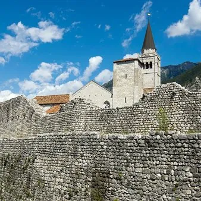

dom 25 ott
Treno storico alla scoperta di Venzone 2026 da Sacile a Venzone
Un viaggio da Sacile a Venzone per scoprire il ricco patrimonio artistico-culturale della cittadina e la tecnica dell’anastilosi che le ha permesso di rinascere dopo il sisma del 1976. Visita guidata inclusa senza costi aggiunti esclusivamente per i possessori del titolo di…
 Indicazioni
Indicazioni
- Costi e prenotazioni
- Costo non indicato · Prenotazione non indicata
- Programma
- Programma da verificare. Apri la fonte ufficiale per orari e possibili aggiornamenti.
- In caso di maltempo
- Nessuna indicazione specifica pubblicata.
- Note
- Acquisito automaticamente dalla fonte.
L’EVENTO
Descrizione completa
Un viaggio da Sacile a Venzone per scoprire il ricco patrimonio artistico-culturale della cittadina e la tecnica dell’anastilosi che le ha permesso di rinascere dopo il sisma del 1976. Visita guidata inclusa senza costi aggiunti esclusivamente per i possessori del titolo di viaggio
Si precisa che la modifica della stazione di partenza da Treviso a Sacile è stata determinata da esigenze tecnico-operative connesse alla messa in esercizio del convoglio storico e alla sua immissione in rete, dipendenti dalle modalità di organizzazione e gestione del servizio ferroviario. Tali circostanze esulano dalle competenze decisionali e dalla sfera di controllo di PromoTurismoFVG e della Regione Friuli Venezia Giulia.
Programma di dettaglio e attività
Il terremoto del Friuli del 1976 rappresenta uno degli eventi più significativi della storia recente della regione e costituisce ancora oggi un esempio internazionale di ricostruzione e rinascita di un territorio colpito da una grave calamità.
La giornata prevede la visita di Venzone , uno dei luoghi simbolo del terremoto, gravemente danneggiato dalle scosse del 6 maggio e del 15 settembre 1976 e successivamente ricostruito attraverso un eccezionale intervento di recupero e ricomposizione del centro storico. Dopo il sisma, la popolazione si mobilitò per salvaguardare l'identità del borgo: nel 1977, a seguito delle demolizioni incontrollate di alcuni edifici danneggiati, nacque il Comitato 19 Marzo , promotore della scelta di ricostruire Venzone "dov'era e com'era", principio che avrebbe guidato l'intero processo di rinascita della città.
Grazie all'ampia documentazione storica disponibile, venne predisposto un Piano Particolareggiato finalizzato alla conservazione del maggior numero possibile di elementi originali e alla valorizzazione delle testimonianze lasciate dal terremoto. La ricostruzione si basò sul recupero delle fondazioni originarie, sul rilievo delle strutture superstiti e sul reimpiego dei materiali recuperati dalle macerie.
Il simbolo di questo straordinario processo fu il Duomo di Sant'Andrea Apostolo . Dopo il suo quasi totale crollo, furono catalogati e fotografati circa 8.000 conci lapidei , registrandone posizione e caratteristiche. La ricostruzione seguì rigorosi criteri conservativi, con la ricollocazione delle pietre originali nella posizione occupata prima del crollo, la distinzione tra parti storiche e integrazioni moderne e il mantenimento delle tracce del sisma come memoria permanente dell'evento.
Completati nel 1995, i lavori restituirono alla comunità il Duomo e il centro storico fedelmente ricostruiti, trasformando Venzone nel simbolo della rinascita del Friuli dopo il terremoto del 1976.
Dettagli sulla Visita guidata : Attraverso la visita guidata i partecipanti potranno conoscere una delle più significative esperienze di recupero del patrimonio culturale italiano, riflettendo sul valore della memoria, della solidarietà e della resilienza che hanno caratterizzato la risposta del territorio friulano alla tragedia del sisma.
Ritrovo ore 14.30 presso la loggia comunale. La visita guidata è inclusa senza costi aggiunti per i passeggeri del treno storico. La visita si concluderà alle ore 16.30.
Dettagli sul pranzo : pranzo libero. Si raccomanda la prenotazione nei giorni precedenti nei locali del centro storico Mangiare friulano nei ristoranti di Venzone (venzoneturismo.it)
INFORMAZIONI DI SERVIZIO AI PASSEGGERI: Dalla stazione di Venzone i passeggeri potranno raggiungere comodamente il centro con una breve passeggiata di 10 min a piedi.
Il treno storico partirà da Venzone per Sacile alle ore 17.26
ACQUISTA IL BIGLIETTO
Orari del treno
Andata: Sacile 07:18 Budoia Polcenigo 07:33 Aviano 07:43 Maniago 08:12 Osoppo 10:17 Gemona Del Fr. 10:27 Venzone 10:34
Ritorno Venzone 17:26 Gemona Del Fr. 17:36 Osoppo 17:54 Maniago 20:01 Aviano 20:21 Budoia Polcenigo 20:33 Sacile 20:51 Tariffe:
Andata e ritorno in treno storico
Adulti 10€;
Ragazzi (dai 4 ai 12 anni non compiuti) 5€;
Bambini (dai 0 ai 4 anni non compiuti) gratis senza riservazione del posto a sedere
Biglietti in vendita attraverso tutti i canali Trenitalia: www.trenitalia.com • biglietterie e self-service di stazione • agenzie di viaggio abilitate.
IL PROGRAMMA
Programma e orari
Appuntamenti raccolti dalle fonti elencate. Dove manca un orario, non è ancora disponibile in questa scheda.
Programma pubblicato
- Dal 2026-10-25 al 2026-10-25
INFORMAZIONI UTILI
Prima di partire
- Controllare la fonte prima di partire.
ORGANIZZAZIONE